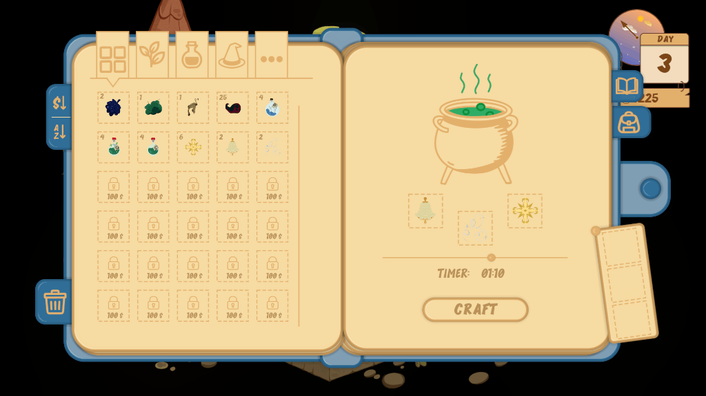

Wiskers & Magic
Projekt stworzony przez zespół 8bitJelly
O Projekcie
Wiskers & Magic to gra stworzona przez zespół 8bitJelly. Odpowiadaliśmy za przygotowanie kompletnej ścieżki dźwiękowej.
- Pełna produkcja muzyczna (Soundtrack)
- Współpraca w modelu Indie
Soundtrack
Zrzuty Ekranu z Gry


